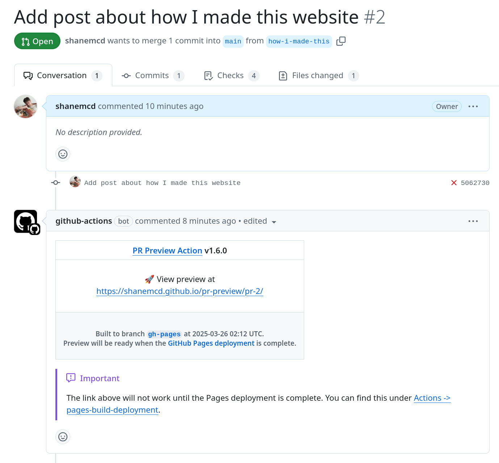

In my last post (which also happened to be My first post) I provided a little bit of context as to why I made this website. Now that I’ve gotten that over with, I’m going to continue on my merry way and pontificate on random and mostly technical things that I have been occupying my time. I figured a good place to start would be to capture how I made this website.
Markdown, please
As I’ve gotten older, I’ve begun to care more about retaining full control of my data. I’ve also developed more of a propensity towards simplicity, and that involves searching out things that I’m able to understand and easily navigate. Tools that just get out of my way. At this point, writing in Markdown has become second nature. I find myself using it even I don’t mean to.
Obsidian
I think most developers have heard of Obsidian by now - an application for writing and managing content in Markdown. Anyone who has written a lot of Markdown-based content will know that it can become unwieldy to manage over time, especially when linking between documents and using some more of its advanced features like tables. Obsidian makes these things easy, with real-time previews and the ability to automatically update links when you move things around.
Quartz
While Obsidian has its own (paid) option to publish to a website hosted on their servers, it is after all just a directory full of files. While there are several static website generators out there that support Markdown, none are quite as polished as Quartz- which also happens to be Obsidian compatible out of the box. If you haven’t seen Quartz before, I could not recommend it enough - it’s fast, has an extremely powerful search feature, live reloading, and is pretty much infinitely flexible if you’re willing to spend a little time learning TypeScript.
Running Quartz locally
As much as I love Quartz, I did not love how their documentation currently instructs users to clone the repository locally, install NodeJS, and store content within a fork of the Quartz project.
Custom tooling
To prevent installing Node on my computer, I put together a custom Containerfile that installs the necessary dependencies and clones the Quartz repo:
FROM registry.fedoraproject.org/fedora
ARG QUARTZ_REF=eccad3da5d7b84b0f78a85b357efedef8c0127fc
USER root
RUN dnf install -y git make nodejs && \
npm install -g n && \
n lts && \
npm install -g npm@latest && \
dnf remove -y nodejs
RUN git config --global --add safe.directory /repo
RUN cd /opt && git clone https://github.com/jackyzha0/quartz.git && \
cd quartz && git checkout ${QUARTZ_REF} && \
npm ci
COPY quartz.config.ts /opt/quartz/
COPY quartz.layout.ts /opt/quartz/
WORKDIR /opt/quartzNote here how I clone Quartz into the image and only COPY the files that I need to customize.
Why am I currently using a random SHA rather than a tagged version? While I was in the process of building out this website I came across this issue - although they didn’t end up accepting my PR, I’m grateful that the maintainers of Quartz were willing to collaborate and fix the underlying problem.
Make it simple
Some things are just better off not being rewritten in JavaScript. I think Make is one of these things. It might have first came out closer to the Moon landing than when I built this website, but it’s still more powerful than anything that’s been written in recent years and it’s way less likely to be abandoned as the project some dude wrote over the weekend and shared on Hacker News.
See the full version of my Makefile for this website for more information, but the gist of it is here:
.DEFAULT_GOAL := scratchpad
.PHONY: scratchpad
scratchpad: check_image_uptodate
@$(CONTAINER_RUNTIME) run --rm -ti \
-p $(QUARTZ_SERVER_PORT):$(QUARTZ_SERVER_PORT) \
-p $(QUARTZ_WEBSOCKET_PORT):$(QUARTZ_WEBSOCKET_PORT) \
$(COMMON_MOUNTS) \
$(SCRATCHPAD_IMAGE_NAME) \
.PHONY: check_image_uptodate
check_image_uptodate: image
@echo "Checking current image SHA..."
@current_sha=$$($(CONTAINER_RUNTIME) inspect --format='{{.Id}}' $(SCRATCHPAD_IMAGE_NAME):$(IMAGE_TAG) 2>/dev/null || echo "none"); \
stored_sha=$$(cat $(IMAGE_ID_FILE) 2>/dev/null || echo "none"); \
if [ "$$current_sha" != "$$stored_sha" ] || [ -z "$$current_sha" ]; then \
echo "Building image... $$current_sha $$stored_sha"; \
$(MAKE) -B -f $(MAKEFILE_PATH) image; \
else \
echo "Image is up to date."; \
fi
.PHONY: image
image: $(IMAGE_ID_FILE)
$(IMAGE_ID_FILE): .generated Containerfile quartz.config.ts quartz.layout.ts
$(CONTAINER_RUNTIME) build -t $(SCRATCHPAD_IMAGE_NAME):$(IMAGE_TAG) .
$(CONTAINER_RUNTIME) inspect --format='{{.Id}}' $(SCRATCHPAD_IMAGE_NAME):$(IMAGE_TAG) > $(IMAGE_ID_FILE)The result here is that on a machine with just make and podman (or docker) installed, I can simply clone this repo and run the command:
➜ shanemcd.github.io git:(main) ✗ make
Checking current image SHA...
Image is up to date.
npx quartz build --serve --port=6006 --directory=/repo/content
Quartz v4.5.0
Cleaned output directory `public` in 2ms
Found 4 input files from `/repo/content` in 5ms
Parsed 4 Markdown files in 112ms
Filtered out 0 files in 24μs
Emitted 16 files to `public` in 71ms
Done processing 4 files in 191ms
Started a Quartz server listening at http://localhost:6006
This handles building (and rebuilding) the container image, starting serving Quartz, mounting in the site content, and mapping ports for the web server and live-reload websocket.
Deploying via GitHub Pages
Most people are familiar with using GitHub Pages to host a Jekyll website, but it is also possible to serve up a pre-built HTML website that has been pushed to a branch. To automate this process I threw together this GitHub Action:
# Simple workflow for deploying static content to GitHub Pages
name: Deploy static content to Pages
permissions:
contents: write
on:
# Runs on pushes targeting the default branch
push:
branches: ["main"]
# Allow only one concurrent deployment, skipping runs queued between the run in-progress and latest queued.
# However, do NOT cancel in-progress runs as we want to allow these production deployments to complete.
concurrency:
group: "pages"
cancel-in-progress: false
env:
CONTAINER_RUNTIME: docker
RUN_CMD: >-
QUARTZ_BUILD_OPTS='-o /repo/public' make -f /repo/Makefile public
jobs:
# Single deploy job since we're just deploying
deploy:
environment:
name: github-pages
url: ${{ steps.deployment.outputs.page_url }}
runs-on: ubuntu-latest
steps:
- name: Checkout
uses: actions/checkout@v4
with:
fetch-depth: 0
- name: Build site
run: make run
- name: Upload artifact
uses: actions/upload-pages-artifact@v3
with:
path: public
- name: Deploy 🚀
uses: JamesIves/github-pages-deploy-action@v4
with:
folder: public
branch: gh-pages
clean-exclude: pr-preview
force: falsePreviewing changes
I might be lazy, but I also love finding a good problem to over-engineer. I had originally done this for a project at work, but was able to reuse here without much effort.
Unfortunately GitHub Pages does not natively support previewing changes. It seems like that will come at some point, but it’s been almost 5 years and there’s still ETA. Luckily the Deploy PR Preview action will do just fine for now.
Here is how I’m using it. The only thing I’ve changed is an additional invocation of marocchino/sticky-pull-request-comment, which I found rossjrw/pr-preview-action uses under the hood. I update the comment it posts to add a little reminder that the link will only work once the Action completes.
---
name: preview
permissions:
contents: write
pull-requests: write
concurrency: preview-${{ github.ref }}
on:
pull_request_target:
types:
- opened
- reopened
- synchronize
- closed
env:
CONTAINER_RUNTIME: docker
RUN_CMD: >-
QUARTZ_BUILD_OPTS='-o /repo/public' make -f /repo/Makefile public
jobs:
preview:
runs-on: ubuntu-20.04
steps:
- name: Checkout
uses: actions/checkout@v3
with:
ref: refs/pull/${{ github.event.pull_request.number }}/merge
fetch-depth: 0
- run: |
git log
- name: Build site
if: github.event.action != 'closed'
run: make run
- name: Deploy preview
uses: rossjrw/pr-preview-action@v1
with:
source-dir: public
- name: Update preview comment with note about being patient
uses: marocchino/sticky-pull-request-comment@v2
with:
header: pr-preview
append: true
message: |
> [!IMPORTANT]
> The link above will not work until the Pages deployment is complete. You can find this under [Actions -> pages-build-deployment](https://github.com/andyettanotherorg/shanemcd.github.io/actions/workflows/pages/pages-build-deployment).Which looks like this:

This might be overkill, but it lets me test things out without iterating directly on my main branch and helps for cases where I might not have access to Obsidian or the ability to test a site build locally.
Wrapping up
I mostly captured this for my own posterity, but if for whatever reason you find yourself wanting to learn more please about any of this please check out the source for this website. If you have any questions or just want to say hi, my email is on my GitHub profile.